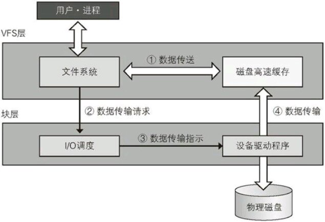
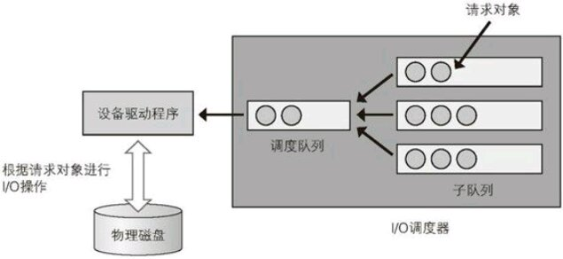

linux IO子系统概览
IO子系统概况
Linux的IO子系统由VFS(Virtual File System,虚拟文件系统)层和块层构成。 其中，VFS层用于将各种不同的文件系统统一起来，形成统一的抽象层。 而块层用于通过设备驱动将数据读取或写入物理磁盘。
#+IO子系统的结构 
我们通常说的“文件系统的块大小”，指的就是块层中的设备驱动程序从物理磁盘读取/写入数据的最小单位。
值得一提的是，当分区的大小不为块大小的整数时(比如在512字节扇区的磁盘上，文件系统块大小设置为为4K,而分区不是8的整数倍时),那么最终会有一个块超出分区界限，那么这个超出分区界限的块不会在文件系统中被使用。
写入数据的情形
当写入数据时，根据上图所示，其步骤为：
当数据被写入文件系统的文件中时，首先会暂时存入磁盘高速缓存中。
虽然这一步并未真正将数据写入物理磁盘中，但应用程序依然认为写入动作已经完成。 这些没有写入物理磁盘的数据被成为“脏数据”
- 当脏数据积累到一定程度,或一定时间后，文件系统会向IO调度发出请求，将脏数据写入物理磁盘中
- IO调度器响应请求队列中的请求，调用设备驱动程序将数据写入物理磁盘中。
- 设备驱动程序将数据从磁盘高速缓存写入到物理磁盘中。
读取数据的情形
当读取数据时，根据上图所示，其步骤为：
- 若目标数据已经存在于磁盘高速缓存中，那么文件系统直接将这些数据返回进程
- 若目标数据不再磁盘高速缓存中，那么进程会暂停执行进入等待状态，之后文件系统会向IO调度器发出读取数据的请求
- IO调度器相应请求，调用设备驱动程序把数据从物理磁盘读入磁盘高速缓存中
- 设备驱动程序程序把数据从物理磁盘读入磁盘高速缓存中，然后解除进程等待状态，进入就绪状态，再回到第一步
IO调度器

当文件系统通过IO调度器将数据写入物理磁盘时，遵循以下步骤：
- 文件系统将磁盘高速缓存中的数据分配到物理磁盘的连续扇区中，每块连续的扇区都会在内核中构成一个bio对象，再把这些bio对象传递给IO调度器
IO调度器接收到bio对象后将多个bio对象合并成一个请求对象，加入到请求子队列中
bio对象的合并方法根据各IO调度器不同而不同. 一般来说，如果bio对象指定的连续扇区和已经存在的某个请求队列中的连续扇区一致，那么就会将两个对象合并，否则就创建一个只包含该bio对象的新请求对象。
- 子队列中的请求对象增加到一定程度后，将请求对象转移到调度队列中进行实际的写入/读取操作
- 设备驱动程序根据请求对象在其所指定的区域进行读取或写入。
四种IO调度器的特点
Linux主要使用以下四种IO调度器，它们的特征如下：
noop(no optimization)调度器
该调度器只有一个子队列，按照bio对象被接受时的顺序处理请求
cfg(complete fair queuing)调度器
bio对象被接收后，将发送该bio对象的进程ID通过散列函数，映射到64个子队列中的某个队列中。这样每个进程的IO请求都会被公平执行。
deadline调度器
用不同的队列来维护读请求和写请求。
它将接收到的bio对象，根据其对应的扇区位置，以减少磁盘头移动为原则，插入到请求队列中最合适的位置。
但是若有新的bio对象不断插入到队列前面，那么队列的请求可能一直得不到处理，因此超过一段时间没有处理的请求会被优先处理。
anticipatory调度器
在deadline调度器的基础上，会尝试预测下一个bio对象。
查看/修改调度器
查看调度器
我们可以通过 /sys/block/<磁盘名>/queue/scheduler 来查看或设置IO调度器的名称。
cat /sys/block/sda/queue/scheduler
结果为:
noop deadline [cfq]
这个意思是，本机支持的调度器有 noop, deadline, 和 cfq. 其中 sda 中采取的调度器为 cfg(被[]括起来)
此外我们也能通过 lsblk -t 命令来查看调度器
lsblk -t
结果为:
NAME ALIGNMENT MIN-IO OPT-IO PHY-SEC LOG-SEC ROTA SCHED RQ-SIZE RA WSAME sda 0 512 0 512 512 0 cfq 128 128 0B ├─sda1 0 512 0 512 512 0 cfq 128 128 0B ├─sda2 0 512 0 512 512 0 cfq 128 128 0B └─sda3 0 512 0 512 512 0 cfq 128 128 0B sr0 0 512 0 512 512 1 cfq 128 128 0B
其中 SCHED 这一栏中现实的就是当前调度器的名称。
修改调度器
通过 echo 命令往 /sys/block/<磁盘名>/queue/scheduler 中写入新的IO调度器名称就能够临时修改当前使用的调度器。
sudo bash -c 'echo "deadline" > /sys/block/sda/queue/scheduler'
cat /sys/block/sda/queue/scheduler
结果为:
noop [deadline] cfq
可以看到，调度器被修改为 deadline 了，我们再用 lsblk 验证一下:
lsblk -t
结果为:
NAME ALIGNMENT MIN-IO OPT-IO PHY-SEC LOG-SEC ROTA SCHED RQ-SIZE RA WSAME sda 0 512 0 512 512 0 deadline 128 128 0B ├─sda1 0 512 0 512 512 0 deadline 128 128 0B ├─sda2 0 512 0 512 512 0 deadline 128 128 0B └─sda3 0 512 0 512 512 0 deadline 128 128 0B sr0 0 512 0 512 512 1 cfq 128 128 0B
ionice命令
通过ionice命令可以对cfq调度器中的每个进程设置优先级：
- Real time
- 这个级别进程的IO会最为优先被处理
- Idle
- 这个级别进程的IO和Real time正相反，只有在系统所有进程IO都被处理完后才会处理它
- Best effort
- 默认的优先级，给予cfq调度器的正常逻辑，公平地进行IO调度
此外，对于Real time和Best effort的进程，还能指定数值0～7的优先级参数，数值越小，优先级越高。
关于ionice的用法，可以查看帮助
ionice --help
结果为:
用法：
ionice [选项] -p <pid>...
ionice [选项] -P <pgid>...
ionice [选项] -u <uid>...
ionice [选项] <命令>
设置或更改进程的 IO 调度类别和优先级。
选项：
-c, --class <类别> 调度类别的名称或数值
0: 无, 1: 实时, 2: 尽力, 3: 空闲
-n, --classdata <数字> 指定调度类别的优先级(0..7)，只针对
“实时”和“尽力”类别
-p, --pid <pid>... 对这些已运行的进程操作
-P, --pgid <pgrp>... 对这些组中已运行的进程操作
-t, --ignore 忽略失败
-u, --uid <uid>... 对属于这些用户的已运行进程操作
-h, --help display this help
-V, --version display version
更多信息请参阅 ionice(1)。